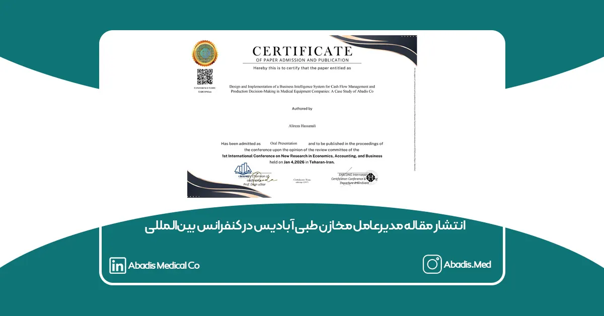
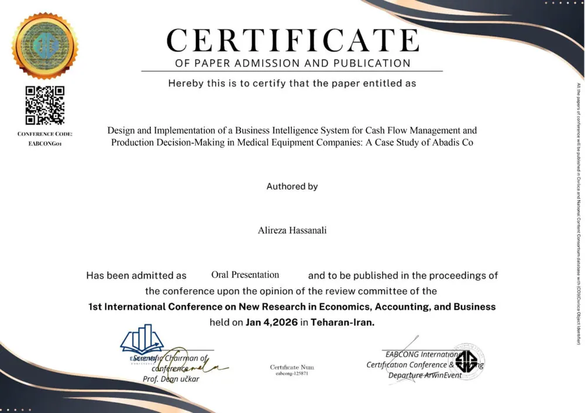

مقاله علمی جناب آقای علیرضا حسنعلی، مدیرعامل شرکت مخازن طبی آبادیس، با عنوان: «طراحی و پیادهسازی سیستم هوش تجاری برای مدیریت نقدینگی و تصمیمگیری تولید در شرکتهای تجهیزات پزشکی: مطالعه موردی آبادیس»
در اولین کنفرانس بین المللی پژوهش های نوین در اقتصاد، حسابداری و بازرگانی پذیرفته و منتشر گردید.
این کنفرانس با همکاری دانشگاهها، مراکز علمی و انجمنهای معتبر تخصصی برگزار شده و مقالات ارسالی پس از طی فرآیند داوری علمی مورد ارزیابی قرار گرفتهاند. مقاله ارائهشده توسط مدیرعامل مخازن طبی آبادیس نیز پس از داوری تخصصی موفق به دریافت گواهی رسمی پذیرش (Certificate) گردید.
در این پژوهش، با رویکردی دادهمحور و کاربردی، نقش سیستمهای هوش تجاری (Business Intelligence) در بهبود مدیریت نقدینگی، تحلیل شاخصهای مالی (DSO/DPO) و ارتقای دقت برنامهریزی تولید در صنعت تجهیزات پزشکی بررسی شده است. شرکت مخازن طبی آبادیس بهعنوان مطالعه موردی این تحقیق انتخاب شده و مدل طراحیشده بهصورت عملیاتی در سازمان پیادهسازی گردیده است.
انتشار این مقاله در یک رویداد علمی بینالمللی، نشاندهنده تعهد شرکت مخازن طبی آبادیس به توسعه دانشمحور، تصمیمگیری مبتنی بر تحلیل داده و ارتقای استانداردهای مدیریتی در صنعت تجهیزات پزشکی کشور است.
مخازن طبی آبادیس همواره تلاش کرده است تا در کنار تولید محصولات تخصصی و باکیفیت، نقش فعالی در پیوند میان صنعت و پژوهش ایفا نماید و مسیر رشد پایدار را بر پایه دانش و نوآوری دنبال کند.
گواهی رسمی پذیرش مقاله در اولین کنفرانس بینالمللی پژوهشهای نوین در اقتصاد، حسابداری و بازرگانی

برای مشاهده مقاله روی این لینک کلیک نمایید.